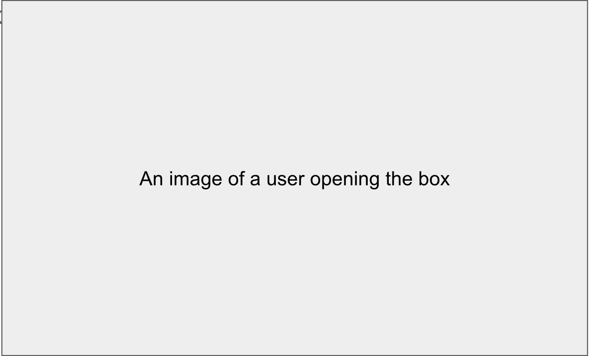
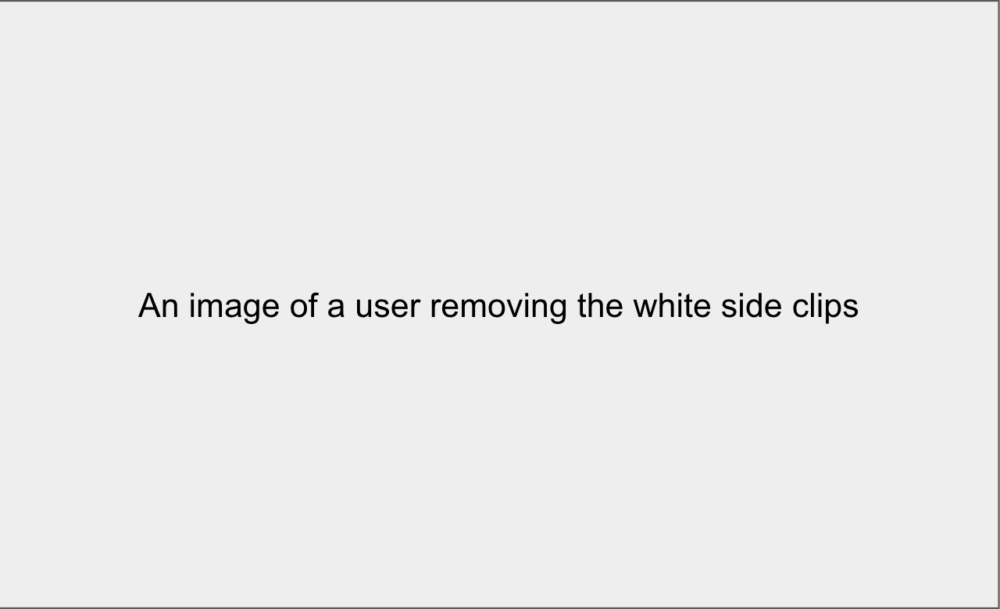
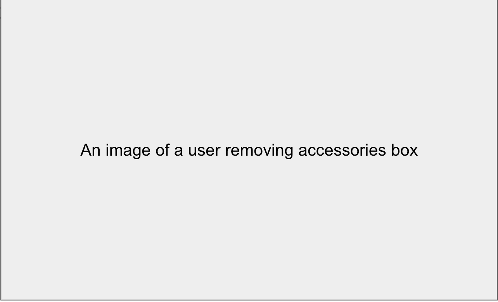
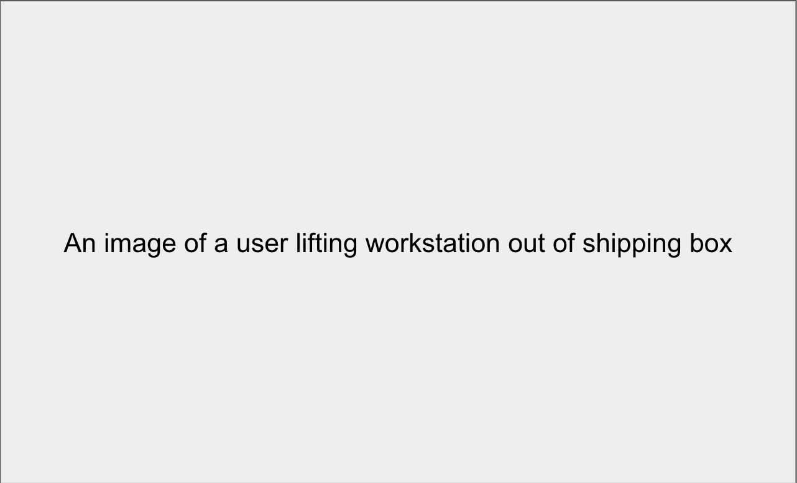
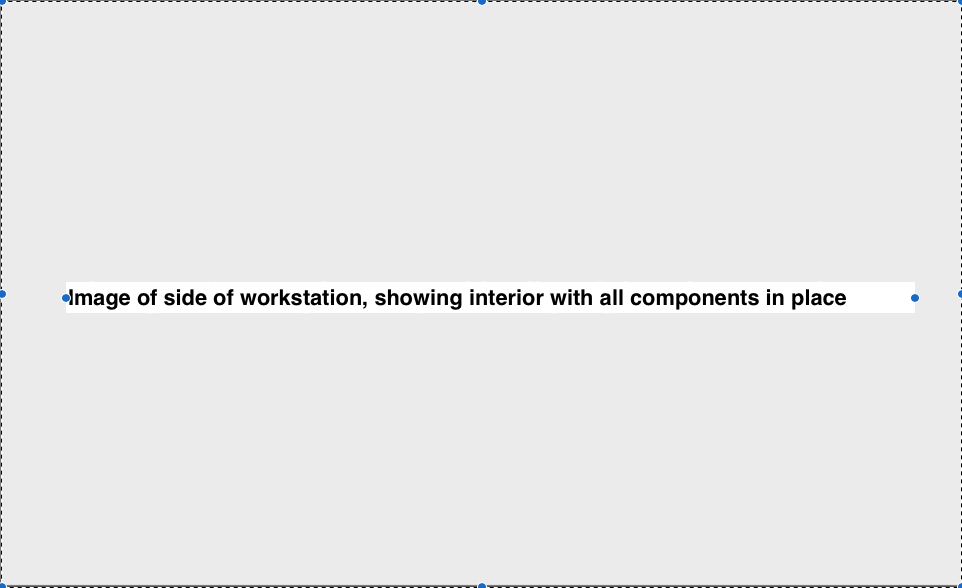
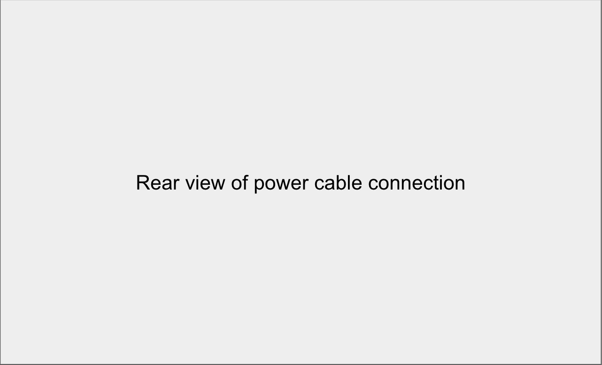
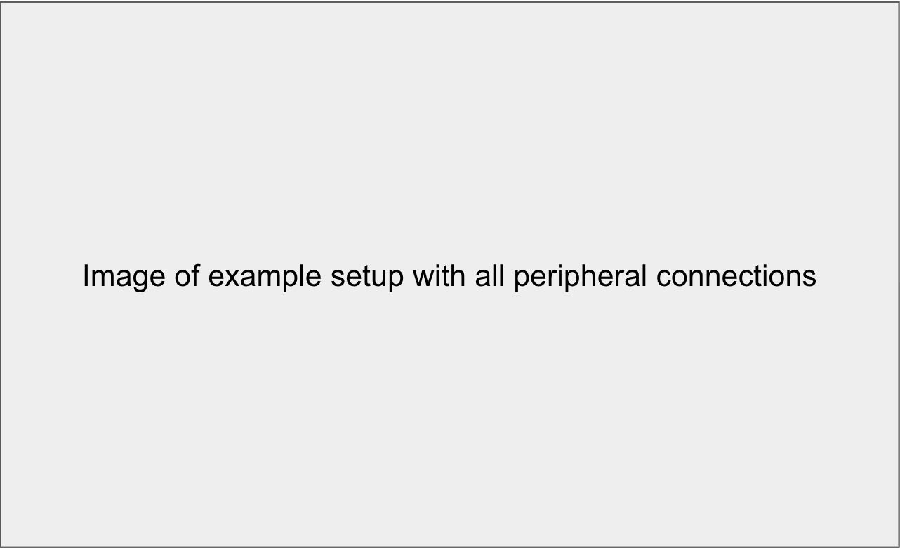
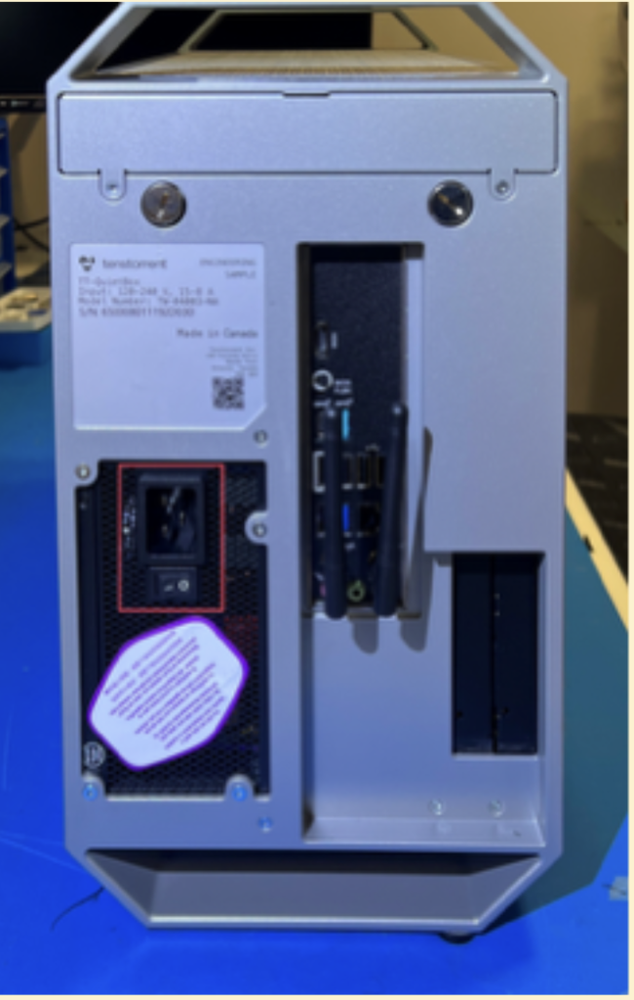
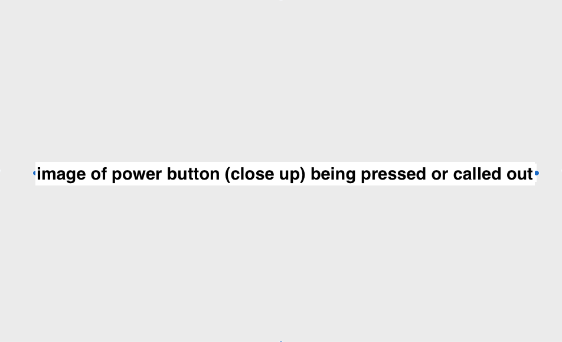

Receiving, Unboxing, and Setup
Note: This content is still being drafted. Once finalized, the complete documentation will be available at docs.tenstorrent.com
This page would like your suggestions for content and accuracy. Please add them to the feedback form here. Thank you!
This section guides users through how to safely unbox, setup hardware, and install software on a TT-QuietBox 2 (Blackhole) Workstation.
Before You Begin
Before you begin:
Choose a clear, stable, and spacious area for the TT-QuietBox 2, where it will not need to be moved regularly.
The system weighs 20.2 kg (44.5 lbs) – ensure you can comfortably lift this weight, or ask another person for assistance before getting started.
Clear the area where you intend to use the Workstation and ensure to use a dedicated 15A circuit and outlet, as specified in the electrical safety warning linked below.
Confirm that all top vents are clear of obstructions or other objects.
Do not proceed with unboxing or installation if you suspect shipping damage to the system. Contact Tenstorrent support by raising a support request. Our team will review your request and provide assistance.
Safety Warnings
Please visit the safety warnings section on the specifications page for information about electrical and electrostatic discharge (ESD) warnings.
Caution: Heavy
The TT-QuietBox 2 shipping container weighs approximately 50 lbs (22.6 kg). At least two people are recommended to unbox and install the system safely.
Caution: Hot Surfaces
The interior of the workstation can become extremely hot when running. Do not touch any interior components of the workstation before turning the power off, letting the Power Supply Unit (PSU) fully drain, and allowing interior components to cool
Required Tools
The Tenstorrent TT-QuietBox 2 (Blackhole) (TW-04003) package includes the following items:
1x TT-QuietBox 2 (Blackhole) Workstation
1x Power Supply Cord (C19 to NEMA 5-15P)
1x AnkerWork S500 speakerphone and dongle (first 100 units)
For setup, you will also need your own:
Keyboard
Mouse
HDMI cable + monitor
Note: Only use certified HDMI cables with the TT-QuietBox 2. Using non-certified HDMI cables may result in device damage, or non-compliant video operation.
Step 1: Unboxing the Workstation
Note: Photography is expected by March 2026.
Follow these steps to unbox your TT-QuietBox 2 Workstation:
Open the box. Position the crate in your prepared unboxing area, ensuring ample space for two people to work around it.
{kind=link}

Remove the white side clips near the bottom of the packaging.
{kind=link}

Remove Styrofoam, internal sleeve, and accessories box.
{kind=link}

Lift the TT-QuietBox 2 out of the package using the handles on either side of the unit.
{kind=link}

Inspect the system. Inspect the workstation to ensure all components are properly mounted and secured. The system ships with sufficient liquid coolant for long-term operation; adding or purchasing coolant is not necessary.
{kind=link}

Step 2: Setting Up the Hardware
Follow these steps to set up the hardware for your TT-QuietBox Blackhole™ workstation:
Connect the power cable. Connect the provided C19 power cable to the workstation and then to a dedicated power outlet. See the Electrical Safety section for the full list of power requirements.
{kind=link}

Connect peripherals. Connect the included third-party speakerphone USB-A dongle, along with your HDMI monitor, keyboard, and mouse using the HDMI and USB ports on the back of the Workstation. [Information on networking cable TBD]
{kind=link}

Power on the Workstation. On the back of the workstation, flip the switch on the PSU to the “I” position.
{kind=link}

On the front of the workstation, press the power button to turn the system on.
{kind=link}

Step 3. Accessing Default System Logins
Once your system is booted up, follow these instructions for logging into the system using the default Ubuntu credentials.
Accessing the Ubuntu operating system
When the Ubuntu login prompt appears, enter the following default credentials:
Username: ttuser
Password: ttuser
Step 4. Change Default Password
When you log in to your QuietBox, navigate to Ubuntu’s password settings to change the default password. Execute the following command in your terminal to change your password: [information incoming]
Step 5: Verifying System Recognition of Blackhole Cards
In a terminal, execute this command to start tt-smi. Ensure the number of devices listed under the “Device Information” pane matches the number of Tenstorrent devices installed in your QuietBox.
[Diana to verify the below with June]
sudo update-pciids
lspci -d 1e52:
You should see an output which lists four recognized ASICs:
01:00.0 Processing accelerators: Tenstorrent Inc Blackhole
02:00.0 Processing accelerators: Tenstorrent Inc Blackhole
03:00.0 Processing accelerators: Tenstorrent Inc Blackhole
04:00.0 Processing accelerators: Tenstorrent Inc Blackhole
Important
If you don’t see all four accelerators listed, please raise a support request. Our team will review your request and provide assistance.
Step 5: Open TT-Studio
Note: This content is unfinished.
TT-Studio is Tenstorrent’s simple web interface for running AI models on your TT-QuietBox 2.
To ensure you’re running the latest version of TT-Studio, open a Terminal window and run the following command.
cd ~/.local/lib/tt-studio
git pull
Then, run this command to open TT-Studio:
tt-studio --easy
You will be prompted to enter a free Hugging Face User Access Token. To create a token, navigate to huggingface.co and create an account, then follow these steps to generate a token.
Paste your Hugging Face token into your terminal window and run the command. The model weights will start downloading automatically. Depending on the model you’ve selected and the speed of your connection, downloading model weights may take anywhere from 10 minutes to over 40 minutes.
Install dependencies using docker…[precise steps tbd]
Return to TT-Studio and and select a model from the pop-up screen and begin. Visit the TT-Studio guide [link forthcoming] for more tutorials on supported models, and everything else TT-Studio can help you create.
Other Methods of Running Models
After your system is set up, feel free to explore other methods of running models on other layers of our software stack. You may want to:
Run models directly from your terminal using TT-Inference-Server, the fastest way to deploy and test models for serving inference on Tenstorrent hardware.
Run model demos using TT-Metalium.
Need Additional Support?
If you encounter any issues, or have a question that isn’t covered in the documentation, please raise a support request. Our team will review your request and provide assistance.